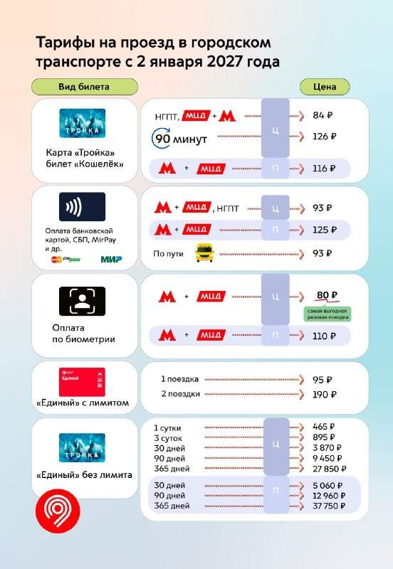
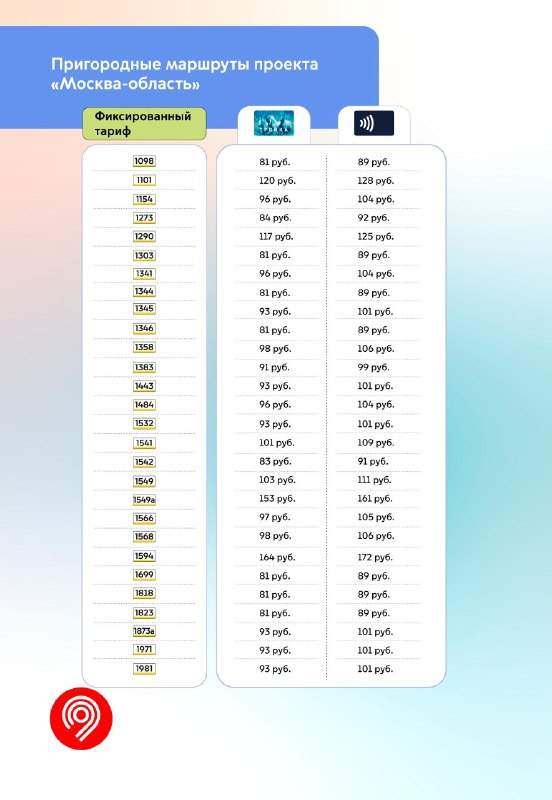
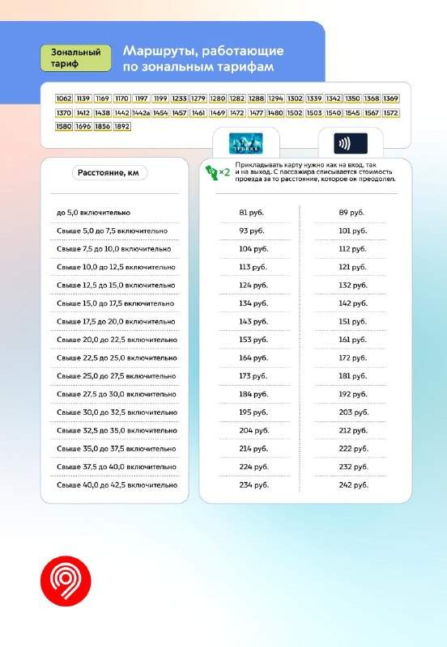
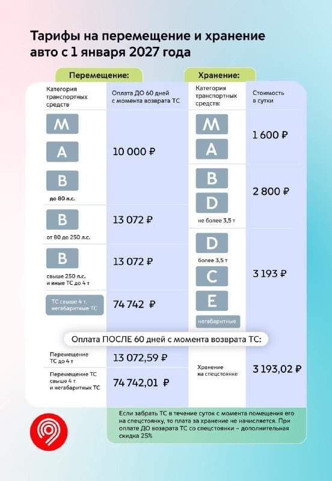

Новости дня — посты за 27.11.2026
Российские банки навязывают пенсионерам инвестиционные и страховые продукты под видом вкладов. Пожилых клиентов заманивают повышенными ставками по депозитам, а при оформлении предлагают вложить часть накоплений в программы долгосрочных сбережений, страхование жизни или открыть брокерский счёт. «Известия» изучили 40 судебных споров и обращений россиян за 2026 год, в них есть все самые крупные банки России. При этом, в отличие от обычного вклада, доходность таких программ не гарантирована, а при досрочном расторжении договора можно потерять часть вложенных денег. ЦБ подтвердил наличие таких схем. @bankrollo
26,2 тысячи рублей готовы потратить россияне на подарки близким к Новому году — Газета ру. Это четверть предлагаемой средней зарплаты в 103 тысячи рублей. @bankrollo
Губернатору Брянской области позвонил бывший фермер, село которого сожгли в прошлом году. «Село сожгли полностью: 300 домов выехали вынужденно оттуда», — заявил мужчина. Он спросил, собираются ли власти вывозить из приграничья технику или компенсировать её стоимость фермерам. В ответ Ковальчук предложил решить вопрос индивидуально. @bankrollo
«Я в жопе». Губернатор Хабаровского края доложил обстановку в MAX. @bankrollo
40-метровая огненная стена вспыхнула на Комсомольском проспекте в Москве после массового ДТП. В районе Парка культуры столкнулись четыре автомобиля, один из них полностью выгорел. Огонь распространился по проезжей части, а проспект заволокло густым чёрным дымом. Сейчас на месте работают экстренные службы. @bankrollo
MAX не будет на iPhone, сообщил глава Минцифры Шадаев. По его словам, министерство не смогло договориться с Apple. @bankrollo
Ввести платёж за ОМС для россиян, которые не работают, но имеют доходы, предложила Матвиенко. По её словам, государство несёт за них обязательства, а они «якобы не работают, но на самом деле работают и хорошо зарабатывают». @bankrollo
Зумеров хотят официально признать детьми в России. ВОЗ и Российское психологическое общество обсуждают повышение планки детства до 21 года. Специалисты считают, что цифровая эпоха сдвинула привычные рамки взросления. @bankrollo
Claude начал банить за поездки в Китай. Вайбкодер случайно открыл нейросеть в отпуске и сразу получил бан. При этом пострадавший живёт в США и имеет американское гражданство, но даже это не помогло во время апелляции. Бан остался в силе. @bankrollo
В подмосковном СНТ один из жителей выкупил все дороги в посëлке и требует с соседей плату за проезд к собственным домам. За проезд на легковом автомобиле надо заплатить 500 рублей и 1000 рублей — на грузовике. @bankrollo
Россия получила первую атомную подлодку с гиперзвуковыми ракетами «Циркон». Они способны поражать корабли и наземные объекты, а их заявленная скорость в 10 раз превышает скорость звука, дальность полёта — более 1000 км. Ввод атомной подлодки «Пермь» в состав ВМФ только что состоялся при участии Путина. Президент назвал её оружием глобального уровня и значения. @bankrollo
Манчестер Юнайтед запустил проект по защите своих фанатов от самоубийств. На домашних матчах болельщики смогут проконсультироваться со специалистами по психическому здоровью и рассказать о своих проблемах. МЮ не побеждал в чемпионате Англии с августа, занимает предпоследнее место в таблице и переживает худший старт сезона за 54 года. Новый главный тренер клуба уже успел повторить антирекорд столетней давности, проиграв свой первый матч со счётом 0:4. @bankrollo
Госуслуги могут стать национальным ИИ-агентом — Шадаев. @bankrollo




В Москве снова подорожает транспорт. Со 2 января одна поездка обойдётся в 93 рубля при оплате банковской картой, а по билету «Единый» — 95 рублей. Если платить своей биометрией, то проезд будет стоить 80 рублей. @bankrollo
В Беларуси заблокируют Spotify с 1 декабря. Сервис не погасил долги по налогам. @bankrollo
«Национальный агент будет. Почему? Потому что мы уже всё знаем про пользователя», — глава Минцифры о ИИ-будущем в России. @bankrollo
Замгендиректора Ингосстраха обвинили в нападении с ножом на полковника МВД из-за конфликта на дороге, пишет Baza. По словам 57-летнего полковника запаса Александра Барковского, он посигналил медленно ехавшей машине в своём коттеджном посёлке в Подмосковье и обогнал её по обочине. Через несколько минут к нему домой пришли двое мужчин, избили его и ударили ножом в ягодицу. Одним из нападавших был его сосед — топ-менеджер Ингосстраха Иван Матвеев. На записи камеры слышны крики: «Ты как проехал-то, бля*ь, по моей машине?! Су*а, бля*ь!» и «Скотобаза! Ты как проехал, бля*ь, урод?!». Полковник обратился в полицию. @bankrollo
Смартфоны и ноутбуки готовятся подорожать в России из-за нового технологического сбора, который введут с 1 декабря. Правительство утвердило правила его уплаты: производители и импортёры будут отдавать государству от 250 до 496 рублей за каждый смартфон, от 500 до 992 рублей за ноутбук и от 50 до 100 рублей за кнопочный мобильный телефон. Эксперты считают, что магазины переложат повышения цен на покупателей. Собранные деньги направят на поддержку отечественной радиоэлектроники. @bankrollo
ИИ помогает России заключить мир на Украине. Спецпредставитель Путина Дмитриев рассказал, что пользуется ИИ, чтобы найти формулировки, которые лучше всего отражают позицию России и помогут составить мирное соглашение. @bankrollo
Telegram потребовал обновить приложение на iOS и разослал пользователям уведомление. @bankrollo
Проезд по Тройке в Москве подорожал в 2 раза с начала СВО. @bankrollo